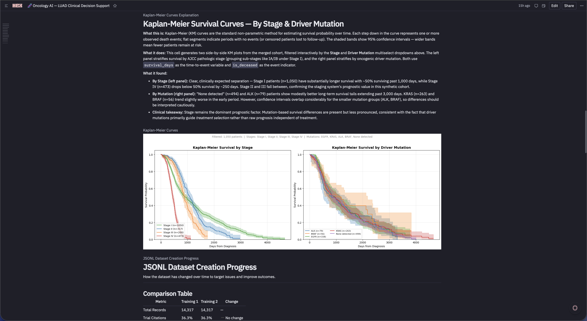
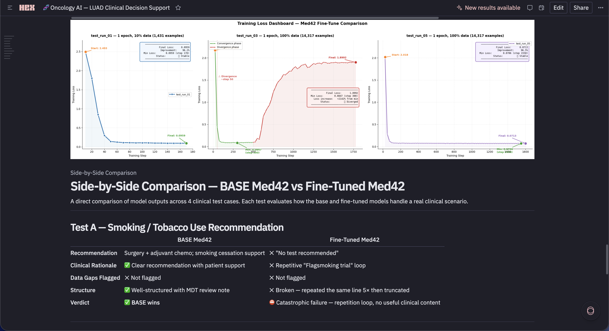
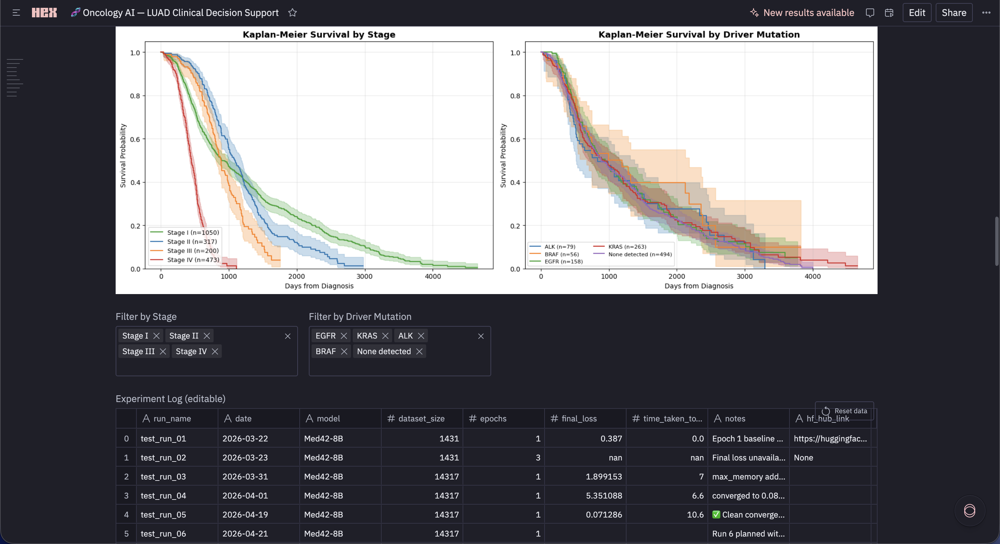
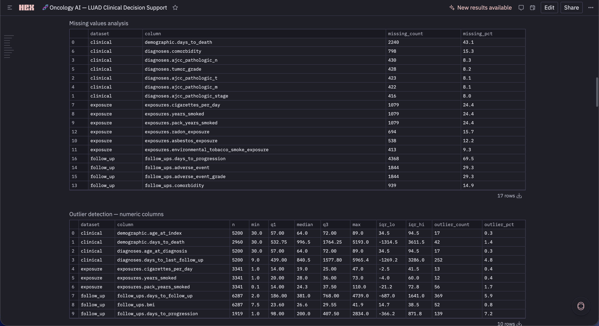

1 / 4
Oncology AI
Clinical Decision Support↗
Fine-tuned Med42-8B on a synthetic lung cancer corpus with QLoRA + 4-bit quantization. Built the pipeline end-to-end: synthetic data generation, training, clinical validity checks, safety review, and a Hex reporting layer.
14,000+clinical prompt–response pairs
2.20 → 0.10training loss across 6 runs
71.4%pharmacological validity on 50-case drug recall eval
+0.45ROUGE over Med42 baseline & GPT-3.5
PythonPyTorchQLoRAHugging FaceHexSQL
View project ↗